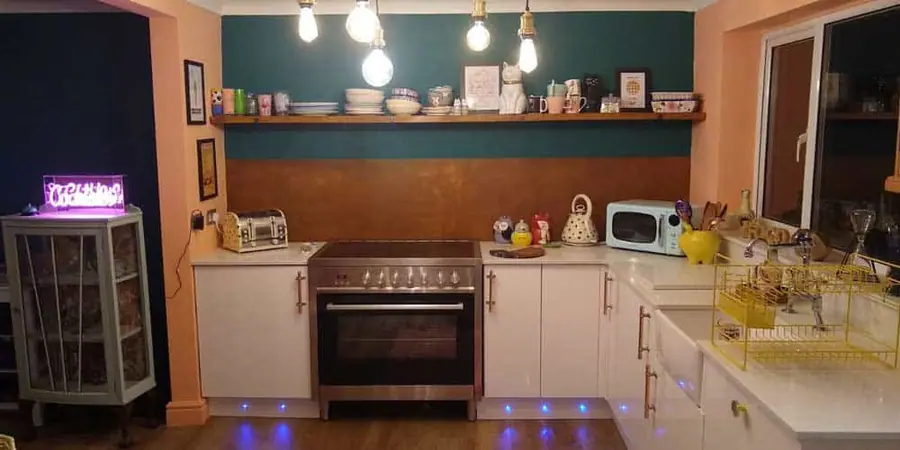
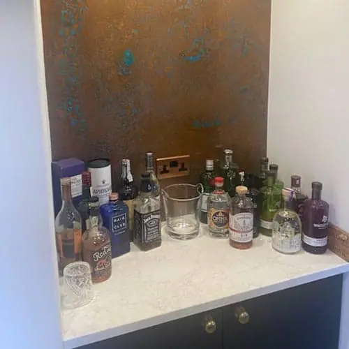
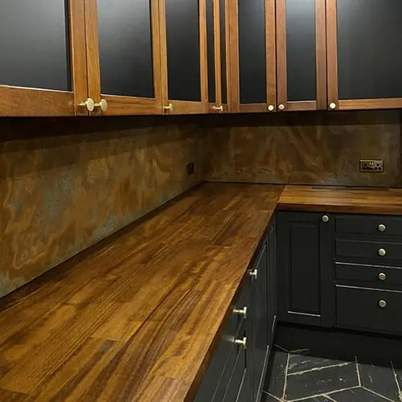
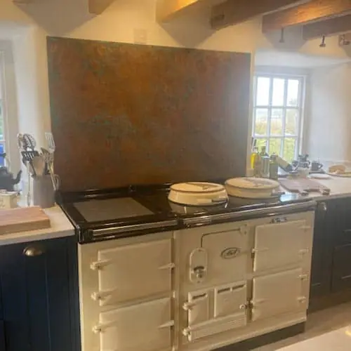
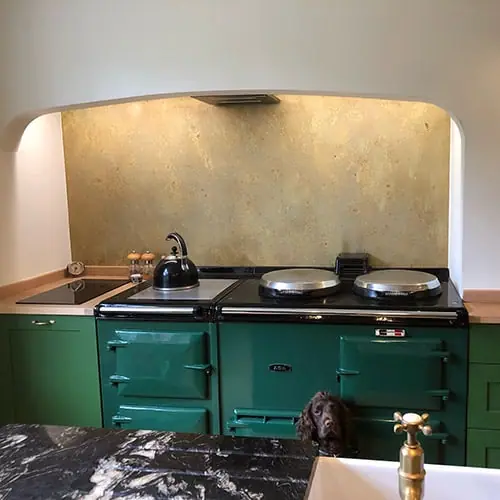

Aged brass splashbacks have timeless appeal and can work with many designs. They combine the beautiful patina of a classic material with the practicalities of a modern splashback. That’s a winning combination!
Please note: our pieces are suitable for use behind non-steam cookers only. It is important that the material is not exposed to direct contact with steam or excessive heat, as this will damage the surface finish.
Choose a finish


Cut to size
Each of our bespoke finishes can be purchased in sheets cut to your size to create unique and beautiful Splashbacks.
- Pricing includes delivery and turnaround time is just 5-8 weeks
- Each piece is coated in a gloss finish lacquer suitable for kitchens
- Fitting is simple and can be done with standard epoxy resins or liquid nail onto most surfaces
Ready to go
Once you select your finish and size our team will work with you throughout the process to produce the perfect piece for your kitchen. For a Bespoke Quote please get in touch . If you’re a business please use our Bespoke Quote for Businesses form .
Brass patina splashback
Our aged brass splashbacks feature a luxury look and feel with characterful colours and textures. It’s a fantastic material to use as a working splashback or as a statement piece.
The benefits of aged brass splashbacks include:
- Unique patterns and patina
- Easy to install with basic DIY tools
- Easy to care for and clean
- Comes in flexible sheets that can be cut to size
All aged brass splashbacks can be custom cut by our team for no extra cost.
Our aged brass splashbacks are designed for use in domestic kitchens. If you would like to use them commercially, contact our expert team to discuss your needs.
FINISHES
- Somerset Finish – Subtle tones of red, pink, blue and green against a stained glass pattern.
- Wiltshire Finish – Distressed vintage brass.
AGED BRASS
Aged brass provides brand new design opportunities or an opportunity to look back in time. Britain has a long history with brass and many of us find comfort from its warm tone and reassuring shine.
Brass makes an excellent decorative or practical material. It’s full of colour and character.
These brass splashbacks are artificially aged to deliver a stunning and unique patina. Each sheet is coated with a gloss lacquer to preserve the patina pattern and prevent further ageing.
CARING FOR YOUR AGED BRASS SPLASHBACK
Our aged brass splashbacks require minimal care and cleaning to maintain.
Clean using mild detergent and warm soapy water to remove dirt and debris. Use a clean soft cloth or sponge to wipe down.
Avoid using scourers or abrasive cleaners. Avoid using acidic or alkaline cleaning products. Find out more with our aged metal care guide .
Order your aged brass splashbacks today from Halman Thompson. We can cut to any size and deliver to your door!
Examples of our aged brass splashback work


Our finishes in use









If you can dream it, we’ll make it.
Bars, balustrades, staircases, worktops, cladding and pieces that don’t have a name yet. Our designers and craftspeople work in brass, copper, zinc and steel, and alongside wood.